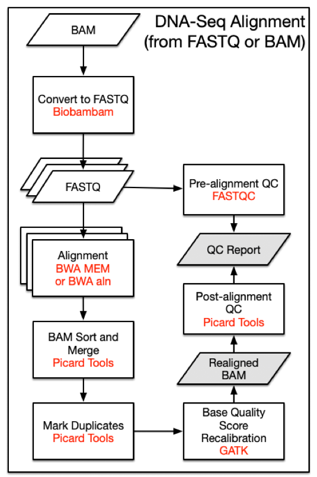

The GDC DNA-Seq analysis pipeline identifies somatic variants within whole exome sequencing (WXS) and whole genome sequencing (WGS) data. Somatic variants are identified by comparing allele frequencies in normal and tumor sample alignments, annotating each mutation, and aggregating mutations from multiple cases into one project file.
The first pipeline starts with a reference alignment step followed by co-cleaning to increase the alignment quality. Four different variant calling pipelines are then implemented separately to identify somatic mutations. Somatic-caller-identified variants are then annotated. An aggregation pipeline incorporates variants from all cases in one project into a MAF file for each pipeline.
DNA-Seq analysis is implemented across six main procedures:
Prior to alignment, BAM files that were submitted to the GDC are split by read groups and converted to FASTQ format. Reads that failed the Illumina chastity test are removed. Note that this filtering step is distinct from trimming reads using base quality scores.
DNA-Seq analysis begins with the Alignment Workflow. Read groups are aligned to the reference genome using one of two BWA algorithms [1]. BWA-MEM is used if mean read length is greater than or equal to 70 bp. Otherwise BWA-aln is used. Each read group is aligned to the reference genome separately and all read group alignments that belong to a single aliquot are merged using Picard Tools SortSam and MergeSamFiles. Duplicate reads, which may persist as PCR artifacts, are then flagged to prevent downstream variant call errors.
All alignments are performed using the human reference genome GRCh38.d1.vd1. Decoy viral sequences are included in the reference genome to prevent reads from aligning erroneously and attract reads from viruses known to be present in human samples. Ten types of human viral genomes are included: human cytomegalovirus (CMV), Epstein-Barr virus (EBV), hepatitis B (HBV), hepatitis C (HCV), human immunodeficiency virus (HIV), human herpes virus 8 (HHV-8), human T-lymphotropic virus 1 (HTLV-1), Merkel cell polyomavirus (MCV), Simian vacuolating virus 40 (SV40), and human papillomavirus (HPV). Reference sequences used by the GDC can be downloaded here.
| I/O | Entity | Format |
|---|---|---|
| Input | Submitted Unaligned Reads or Submitted Aligned Reads | FASTQ or BAM |
| Output | Aligned Reads | BAM |

Note that version numbers may vary in files downloaded from the GDC Portal due to ongoing pipeline development and improvement.
bamtofastq \
collate=1 \
exclude=QCFAIL,SECONDARY,SUPPLEMENTARY \
filename= <input.bam> \
gz=1 \
inputformat=bam \
level=5 \
outputdir= <output_path> \
outputperreadgroup=1 \
outputperreadgroupsuffixF=_1.fq.gz \
outputperreadgroupsuffixF2=_2.fq.gz \
outputperreadgroupsuffixO=_o1.fq.gz \
outputperreadgroupsuffixO2=_o2.fq.gz \
outputperreadgroupsuffixS=_s.fq.gz \
tryoq=1 \
If mean read length is greater than or equal to 70bp:
bwa mem \
-t 8 \
-T 0 \
-R <read_group> \
<reference> \
<fastq_1.fq.gz> \
<fastq_2.fq.gz> |
samtools view \
-Shb
-o <output.bam> -
If mean read length is less than 70bp:
bwa aln -t 8 <reference> <fastq_1.fq.gz> > <sai_1.sai> &&
bwa aln -t 8 <reference> <fastq_2.fq.gz> > <sai_2.sai> &&
bwa sampe -r <read_group> <reference> <sai_1.sai> <sai_2.sai> <fastq_1.fq.gz> <fastq_2.fq.gz> | samtools view -Shb -o <output.bam> -
If the quality scores are encoded as Illumina 1.3 or 1.5, use BWA aln with the "-l" flag.
java -jar picard.jar SortSam \
CREATE_INDEX=true \
INPUT=<input.bam> \
OUTPUT=<output.bam> \
SORT_ORDER=coordinate \
VALIDATION_STRINGENCY=STRICT
java -jar picard.jar MergeSamFiles \
ASSUME_SORTED=false \
CREATE_INDEX=true \
[INPUT= <input.bam>] \
MERGE_SEQUENCE_DICTIONARIES=false \
OUTPUT= <output_path> \
SORT_ORDER=coordinate \
USE_THREADING=true \
VALIDATION_STRINGENCY=STRICT
java -jar picard.jar MarkDuplicates \
CREATE_INDEX=true \
INPUT=<input.bam> \
VALIDATION_STRINGENCY=STRICT
The alignment quality is further improved by the Co-cleaning workflow. Co-cleaning is performed as a separate pipeline as it uses multiple BAM files (i.e. the tumor BAM and normal tissue BAM) associated with the same patient. Both steps of this process are implemented using GATK.
Local realignment of insertions and deletions is performed using IndelRealigner. This step locates regions that contain misalignments across BAM files, which can often be caused by insertion-deletion (indel) mutations with respect to the reference genome. Misalignment of indel mutations, which can often be erroneously scored as substitutions, reduces the accuracy of downstream variant calling steps.
A base quality score recalibration (BQSR) step is then performed using BaseRecalibrator. This step adjusts base quality scores based on detectable and systematic errors. This step also increases the accuracy of downstream variant calling algorithms. Note that the original quality scores are kept in the OQ field of co-cleaned BAM files. These scores should be used if conversion of BAM files to FASTQ format is desired.
| I/O | Entity | Format |
|---|---|---|
| Input | Aligned Reads | BAM |
| Output | Harmonized Aligned Reads | BAM |
java -jar GenomeAnalysisTK.jar \
-T RealignerTargetCreator \
-R <reference>
-known <known_indels.vcf>
[ -I <input.bam> ]
-o <realign_target.intervals>
java -jar GenomeAnalysisTK.jar \
-T IndelRealigner \
-R <reference> \
-known <known_indels.vcf> \
-targetIntervals <realign_target.intervals> \
--noOriginalAlignmentTags \
[ -I <input.bam> ] \
-nWayOut <output.map>
java -jar GenomeAnalysisTK.jar \
-T BaseRecalibrator \
-R <reference> \
-I <input.bam> \
-knownSites <dbsnp.vcf>
-o <bqsr.grp>
java -jar GenomeAnalysisTK.jar \
-T PrintReads \
-R <reference> \
-I <input.bam> \
--BQSR <bqsr.grp> \
-o <output.bam>
Aligned and co-cleaned BAM files are processed through the Somatic Mutation Calling Workflow as tumor-normal pairs. Variant calling is performed using five separate pipelines:
Variant calls are reported by each pipeline in a VCF formatted file. See the GDC VCF Format documentation for details on each available field. At this point in the DNA-Seq pipeline, all downstream analyses are branched into four separate paths that correspond to their respective variant calling pipeline.
Five separate variant calling pipelines are implemented for GDC data harmonization. There is currently no scientific consensus on the best variant calling pipeline so the investigator is responsible for choosing the pipeline(s) most appropriate for the data. Some details about the pipelines are indicated below.
The MuTect2 pipeline employs a "Panel of Normals" to identify additional germline mutations. This panel is generated using TCGA blood normal genomes from thousands of individuals that were curated and confidently assessed to be cancer-free. This method allows for a higher level of confidence to be assigned to somatic variants that were called by the MuTect2 pipeline.
Basic outlines for the other three of the pipelines can be found here:
Indel mutations that were generated with the MuTect2, Pindel, and VarScan pipelinesd are detected and reported in GDC VCF files.
At this time, germline variants are deliberately excluded as harmonized data. The GDC does not recommend using germline variants that were previously detected and stored in the Legacy Archive as they do not meet the GDC criteria for high-quality data.
| I/O | Entity | Format |
|---|---|---|
| Input | Aligned Reads | BAM |
| Output | Raw Simple Somatic Mutation | VCF |
MuSEv1.0; dbSNP v.144
Step 1: MuSE call
MuSE call \
-f <reference> \
-r <region> \
<tumor.bam> \
<normal.bam> \
-O <intermediate_muse_call.txt>
Step 2: MuSE sump
MuSE sump \
-I <intermediate_muse_call.txt> \
-E \
-D <dbsnp_known_snp_sites.vcf> \
-O <muse_variants.vcf>
Note: -E is used for WXS data and -G can be used for WGS data.
GATK; dbSNP v.144
java -jar GenomeAnalysisTK.jar \
-T MuTect2 \
-R <reference> \
-L <region> \
-I:tumor <tumor.bam> \
-I:normal <normal.bam> \
--normal_panel <pon.vcf> \
--cosmic <cosmic.vcf> \
--dbsnp <dbsnp.vcf> \
--contamination_fraction_to_filter 0.02 \
-o <mutect_variants.vcf> \
--output_mode EMIT_VARIANTS_ONLY \
--disable_auto_index_creation_and_locking_when_reading_rods
Somatic-sniper v1
bam-somaticsniper \
-q 1 \
-L \
-G \
-Q 15 \
-s 0.01 \
-T 0.85 \
-N 2 \
-r 0.001 \
-n NORMAL \
-t TUMOR \
-F vcf \
-f ref.fa \
<tumor.bam> \
<normal.bam> \
<somaticsniper_variants.vcf>
Step 1: Mpileup; Samtools
samtools mpileup \
-f <reference> \
-q 1 \
-B \
<normal.bam> \
<tumor.bam> >
<intermediate_mpileup.pileup>
Step 2: Varscan Somatic; Varscan.v2
java -jar VarScan.jar somatic \
<intermediate_mpileup.pileup> \
<output_path> \
--mpileup 1 \
--min-coverage 8 \
--min-coverage-normal 8 \
--min-coverage-tumor 6 \
--min-var-freq 0.10 \
--min-freq-for-hom 0.75 \
--normal-purity 1.0 \
--tumor-purity 1.00 \
--p-value 0.99 \
--somatic-p-value 0.05 \
--strand-filter 0 \
--output-vcf
Step 3: Varscan ProcessSomatic; Varscan.v2
java -jar VarScan.jar processSomatic \
<intermediate_varscan_somatic.vcf> \
--min-tumor-freq 0.10 \
--max-normal-freq 0.05 \
--p-value 0.07
Step 1: Filter Reads
Filter BAM reads that are not unmapped or duplicate or secondary_alignment or failed_quality_control or supplementary for both tumor and normal BAM files
Tool: sambamba
Sambamba view $(input.bam) --filter "not (unmapped or duplicate or secondary_alignment or failed_quality_control or supplementary)" --format bam --nthreads 1 --output-filename $(output.bam)
Step 2: Pindel
Step 2a.: Calculate mean insert size
cmd = "samtools view -f66 %s | head -n 1000000" % (bam)
output = do_shell_command(cmd)
lines = output.decode('utf-8').split('\n')
b_sum = 0
b_count = 0
numlines = 0
for line in lines:
numlines += 1
tmp = line.split("\t")
if len(tmp) < 9:
break
if abs(int(tmp[8])) < 10000:
b_sum += abs(int(tmp[8]))
b_count += 1
try:
mean = b_sum / b_count
Step 2b.: Write it to a config file
for inputBamFile, meanInsertSize, tag in zip(inputBamFiles, meanInsertSizes, tags):
fil.write("%s\t%s\t%s\n" %(inputBamFile, meanInsertSize, tag))
fil.close()
Step 2c.: Run pindel
pindel \
-f GRCh38.d1.vd1.fa \
-i config_file \
-o $(output_prefix) \
--exclude GRCh38.d1.vd1.centromeres.telomeres.bed
Step 2d.: Merge DI and SI OUTPUT
with open(os.path.join(args.workdir, "pindel_somatic"), "w") as handle:
for p in pindel_files:
if p.endswith("_D"):
with open(p) as ihandle:
for line in ihandle:
if re.search("ChrID", line):
handle.write(line)
for p in pindel_files:
if p.endswith("_SI"):
with open(p) as ihandle:
for line in ihandle:
if re.search("ChrID", line):
handle.write(line)
Step 2e.: Create a config for pindel somatic filter
indel.filter.input = $(merged.pindel.output)
indel.filter.vaf = 0.08
indel.filter.cov = 20
indel.filter.hom = 6
indel.filter.pindel2vcf = "/path/to/pindel/pindel2vcf4tcga"
indel.filter.reference = "GRCh38.d1.vd1.fa"
indel.filter.referencename = "GRCh38"
indel.filter.referencedate = datetime.datetime.now().strftime("%Y%m%d")
indel.filter.output = $(output.file.name.vcf)
Step 2f.: Apply somatic filter on pindel output Tool: pindel2vcf4tcga
perl pindel/somatic_filter/somatic_indelfilter.pl $(somatic.indel.filter.config)
Step 3: Pindel Tool: Picard.jar 2
java \
-d64 \
-XX: +UseSerialGC \
-Xmx16G \
-jar picard.jar \
SortVcf \
CREATE_INDEX=true \
SEQUENCE_DICTIONARY=GRCh38.d1.vd1.dict \
I=$(pindel.somatic.vcf) \
OUTPUT=$(output.vcf.gz)
Step 5: Vt Normalization Tool: GenomeAnalysisTK.jar nightly-2016-02-25-gf39d340
java \
-Xmx4G \
-jar \
/bin/GenomeAnalysisTK.jar \
-T VariantFiltration \
--disable_auto_index_creation_and_locking_when_reading_rods \
--variant $(vt.normal.output.vcf.gz) \
-R GRCh38.d1.vd1.fa \
--filterExpression vc.isBiallelic() && vc.getGenotype(\"TUMOR\").getAD().1 < 3" \
--filterName TALTDP \
-o $(output.vcf.gz)
Raw VCF files are then annotated in the Somatic Annotation Workflow with the Variant Effect Predictor (VEP) v84 [6] along with VEP GDC plugins.
The VEP uses the coordinates and alleles in the VCF file to infer biological context for each variant including the location of each mutation, its biological consequence (frameshift/ silent mutation), and the affected genes. See the documentation on the GDC VCF Format for more details. Variants in the VCF files are also matched to known variants from external mutation databases. The following databases are used for VCF annotation:
Due to licensing constraints COSMIC is not utilized for annotation in the GDC VEP workflow.
In addition to annotation, False Positive Filter is used to label low quality variants in VarScan and SomaticSniper outputs. Variants with SSQ < 25 in SomaticSniper are also removed.
| I/O | Entity | Format |
|---|---|---|
| Input | Simple Somatic Mutation | VCF |
| Output | Annotated Somatic Mutation | VCF |
Tumor only variant calling is performed on a tumor sample with no paired normal at the request of the research group. This method takes advantage of the normal cell contamination that is present in most tumor samples. These calls are made using the version of MuTect2 included in GATK4. Tumor-only variant call files can be found in the GDC Portal by filtering for "Workflow Type: GATK4 MuTect2".
GATK4 v4
## 1. Generate OXOG metrics:
java -d64 -XX:+UseSerialGC -Xmx3G -jar /gatk/gatk.jar \
CollectSequencingArtifactMetrics \
-I Tumor_Sample_Alignment.bam \
-O <job_identifier> \
--FILE_EXTENSION .txt \
-R GRCh38.d1.vd1.fa ## Only chr1-22 + XYM
## 2. Generate pileup summaries on tumor sample:
java -d64 -XX:+UseSerialGC -Xmx3G -jar /gatk/gatk.jar \
GetPileupSummaries
-I Tumor_Sample_Alignment.bam \
-O <job_identifier>.targeted_sequencing.table \
-V af-only-gnomad-common-biallelic.grch38.main.vcf.gz \ # Germline reference from gnomad
-L intervals.bed \ ## Only chr1-22 + XYM
-R GRCh38.d1.vd1.fa
## 3. Calculate contamination on tumor sample
java -d64 -XX:+UseSerialGC -Xmx3G -jar /gatk/gatk.jar \
CalculateContamination \
-I <job_identifier>.targeted_sequencing.table \ # From step 2
-O <job_identifier>.targeted_sequencing.contamination.table
## 4. Find tumor sample name from BAM
java -d64 -XX:+UseSerialGC -Xmx3G -jar /gatk/gatk.jar \
GetSampleName \
-I Tumor_Sample_Alignment.bam \
-O <job_identifier>.targeted_sequencing.sample_name
## 5. Run MuTect2 using only tumor sample on chromosome level (25 commands with different intervals)
java -Djava.io.tmpdir=/tmp/job_tmp_3 -d64 -jar -Xmx3G -XX:+UseSerialGC \
/bin/gatk-4.0.4.0/gatk-package-4.0.4.0-local.jar \
Mutect2 \
-R GRCh38.d1.vd1.fa \
-L chr4:1-190214555 \ # Specify chromosome
-I Tumor_Sample_Alignment.bam \
-O 3.mt2.vcf \
-tumor <tumor_sample_name> \ # From step 4
--af-of-alleles-not-in-resource 2.5e-06 \
--germline-resource af-only-gnomad.hg38.vcf.gz \ # Germline reference from gnomad
-pon gatk4_mutect2_4136_pon.vcf.gz # New panel of normal created by 4136 TCGA curated normal samples, using GATK4
## After this step, all chromosome level VCFs are merged into one.
## 6. Sort VCF with Picard
java -d64 -XX:+UseSerialGC -Xmx16G -jar /usr/local/bin/picard.jar \
SortVcf \
SEQUENCE_DICTIONARY=GRCh38.d1.vd1.dict \
OUTPUT=<job_identifier>.targeted_sequencing.mutect2.tumor_only.sorted.vcf.gz \
I=merged_multi_gatk4_mutect2_tumor_only_calling.vcf \ # From step 5
CREATE_INDEX=true
## 7. Filter variant calls from MuTect
java -d64 -XX:+UseSerialGC -Xmx3G -jar /gatk/gatk.jar \
FilterMutectCalls \
-O <job_identifier>.targeted_sequencing.mutect2.tumor_only.contFiltered.vcf.gz \
-V <job_identifier>.targeted_sequencing.mutect2.tumor_only.sorted.vcf.gz \ # From step 6
--contamination-table <job_identifier>.targeted_sequencing.contamination.table \ # From step 3
-L intervals.bed
## 8. Filter variants by orientation bias
java -d64 -XX:+UseSerialGC -Xmx3G -jar /gatk/gatk.jar \
FilterByOrientationBias \
-O <job_identifier>.targeted_sequencing.tumor_only.gatk4_mutect2.raw_somatic_mutation.vcf.gz \ # final output
-P <job_identifier>.pre_adapter_detail_metrics.txt \ # From step 1
-V <job_identifier>.targeted_sequencing.mutect2.tumor_only.contFiltered.vcf.gz \ # From step 7
-L intervals.bed \
-R GRCh38.d1.vd1.fa \
-AM G/T \
-AM C/T
After single-tumor variant calling is performed with MuTect2, a series of filters are applied to minimize the release of germline variants in downloadable VCFs. In all cases, the GDC applies a set of custom filters based on allele frequency, mapping quality, somatic/germline probability, and copy number. In some cases an additional variant classification step is applied before the GDC filters.
The PureCN R-package [7] [8] is used to classify the variants by somatic/germline status and clonality based on tumor purity, ploidy, contamination, copy number, and loss of heterozygosity. The following steps are performed with this package:
Note that PureCN will not be performed if there is insufficient data to produce a target capture kit specific normal database. In rare occasions, PureCN may not find a numeric solution. If PureCN is not performed or does not find a solution, this is indicated in the VCF header. VCF files that were annotated with these pipelines can be found in the GDC Portal by filtering for "Workflow Type: GATK4 MuTect2 Annotation".
The Somatic Aggregation Workflow generates one MAF file from multiple VCF files; see the GDC MAF Format guide for details on file structure. In this step, one MAF file is generated per variant calling pipeline for each project and contains all available cases within this project.
| I/O | Entity | Format |
|---|---|---|
| Input | Multiple Annotated Somatic Mutation | VCF |
| Output | Aggregated Somatic Mutation | MAF |
The MAF files generated by Somatic Aggregation Workflow are controlled-access due to the presence of germline mutations. Open-access MAF files are modified for public release by removing columns and variants that could potentially contain germline mutation information. See the GDC MAF Format for details about the criteria used to remove variants.
While these criteria cause the pipeline to over-filter some of the true positive somatic variants in open-access MAF files, they prevent personally identifiable germline mutation information from becoming publicly available. The GDC recommends that investigators explore both controlled and open-access MAF files if omission of certain somatic mutations is a concern.
| I/O | Entity | Format |
|---|---|---|
| Input | Aggregated Somatic Mutation | Protected MAF |
| Output | Masked Somatic Mutation | Somatic MAF |
Variant calls are generated from WGS data using a different pipeline than WXS and Targeted Sequencing samples. This pipeline, based on a workflow generated by the Sanger Institute, generates multiple downstream data types using the following software packages:
BEDPE file format, (browser extensible data paired-end) is designed to concisely describe disjoint genome features, such as structural variations or paired-end sequence alignments. It's an enhanced version of the BED format, as BED does not allow inter-chromosomal feature definitions. In addition, BED only has one strand field, which is insufficient for paired-end sequence alignments, especially when studying structural variation. The BEDPE format is described below.
In addition to the above fields, bedtools allows for the addition of user-defined fields to the normal, 10-column BEDPE format as necessary. These columns are merely "passed through" pairToBed and pairToPair and are not part of any analysis. One would use these additional columns to add extra information (e.g., edit distance for each end of an alignment, or "deletion", "inversion", etc.) to each BEDPE feature.
AscatNGS, originally developed by Raine et al (2016) (GitHub page), indicates the DNA copy number changes affecting a tumor genome when comparing to a matched normal sample. See below for a description of the copy number segment and copy number estimation files produced by AscatNGS:
Variants reported from the AACR Project GENIE are available from the GDC Data Portal in MAF format. These variants were produced using an abridged pipeline in which the Genomic Data Commons received the variants directly instead of calling them from aligned reads. For an outline of the harmonization process, see the steps below:
The GDC adopts MSIsensor2 to derive Microsatellite Instability (MSI) information from tumor DNA-Seq data. The MSIsensor2 software uses only the tumor BAM as input, and calculates the numeric MSI score (number of msi sites / all valid sites). The MSI status of MSI (Microsatellite Instable) or MSS (Microsatellite Stable) is then determined using a MSI score cutoff value of 20%.
The output msi_score and msi_status values are stored directly as properties of the aligned_reads (BAM files), and can be accessible via API. In addition, the portal/API can be filtered using these proprties by choosing "Add a File Filter" in the Repository Page and selecting msi_score or msi_status.
Please note:
laboratory_test in the molecular_test entity.Files from the GDC DNA-Seq analysis pipeline are available in the GDC Data Portal in BAM, VCF, and MAF formats. Descriptions are listed below for all available data types and their respective file formats.
| Data Type | Description | File Format |
|---|---|---|
| Aligned Reads | Reads that have been aligned to the GRCh38 reference and co-cleaned. Unaligned reads and reads that map to decoy sequences are also included in the BAM files. | BAM |
| Raw Simple Somatic Mutation | A tab-delimited file with genotypic information related to genomic positions. Genomic variants are first identified here. | VCF |
| Annotated Somatic Mutation | An annotated version of a raw simple somatic mutation file. Annotated files include biological context about each observed mutation. | VCF |
| Aggregated Somatic Mutation | A tab-delimited file derived from multiple VCF files. Contains information from all available cases in a project. | MAF |
| Masked Somatic Mutation | A modified version of the Aggregated Somatic Mutation MAF file with sensitive or potentially erroneous data removed. | MAF |
[1]. Li, Heng, and Richard Durbin. "Fast and accurate short read alignment with Burrows-Wheeler transform." Bioinformatics 25, no. 14 (2009): 1754-1760.
[2]. Fan, Yu, Liu Xi, Daniel ST Hughes, Jianjun Zhang, Jianhua Zhang, P. Andrew Futreal, David A. Wheeler, and Wenyi Wang. "Accounting for tumor heterogeneity using a sample-specific error model improves sensitivity and specificity in mutation calling for sequencing data." bioRxiv (2016): 055467.
[3]. Cibulskis, Kristian, Michael S. Lawrence, Scott L. Carter, Andrey Sivachenko, David Jaffe, Carrie Sougnez, Stacey Gabriel, Matthew Meyerson, Eric S. Lander, and Gad Getz. "Sensitive detection of somatic point mutations in impure and heterogeneous cancer samples." Nature biotechnology 31, no. 3 (2013): 213-219.
[4]. Koboldt, Daniel C., Qunyuan Zhang, David E. Larson, Dong Shen, Michael D. McLellan, Ling Lin, Christopher A. Miller, Elaine R. Mardis, Li Ding, and Richard K. Wilson. "VarScan 2: somatic mutation and copy number alteration discovery in cancer by exome sequencing." Genome research 22, no. 3 (2012): 568-576.
[5]. Larson, David E., Christopher C. Harris, Ken Chen, Daniel C. Koboldt, Travis E. Abbott, David J. Dooling, Timothy J. Ley, Elaine R. Mardis, Richard K. Wilson, and Li Ding. "SomaticSniper: identification of somatic point mutations in whole genome sequencing data." Bioinformatics 28, no. 3 (2012): 311-317.
[6]. McLaren, William, Bethan Pritchard, Daniel Rios, Yuan Chen, Paul Flicek, and Fiona Cunningham. "Deriving the consequences of genomic variants with the Ensembl API and SNP Effect Predictor." Bioinformatics 26, no. 16 (2010): 2069-2070.
[7]. Riester, Markus, Angad P. Singh, A. Rose Brannon, Kun Yu, Catarina D. Campbell, Derek Y. Chiang, and Michael P. Morrissey. "PureCN: copy number calling and SNV classification using targeted short read sequencing." Source code for biology and medicine 11, no. 1 (2016): 13.
[8]. Oh, Sehyun, Ludwig Geistlinger, Marcel Ramos, Martin Morgan, Levi Waldron, and Markus Riester. "Reliable analysis of clinical tumor-only whole exome sequencing data" bioRxiv 552711 (2019);
[9]. Gene-level copy number data is generated by intersection of copy number segment and gene ranges. It is possible for one gene to overlap with multiple segments, and in this case, copy_number, min_copy_number and max_copy_number could take different values. In particular, the copy_number value is calculated as the median, weighted on length of overlapped bases, of segment copy numbers from all overlapped segments.
{kind=link}
{kind=link}
{kind=link}
{kind=link}